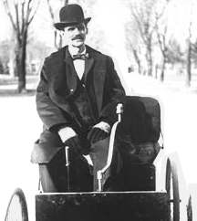

| Ethics Dictionary | Conditions Formulas | PTS Glossary | FAQs |
|
|
| Ethics Dictionary | Conditions Formulas | PTS Glossary | FAQs | |
Appendix
Ethics-Tech-Admin
or How to Stay in Business
A cycle of action is a be-do-have sequence of events. In order to produce an effect or product one has to assume a certain beingness. After that one has to do the actions required. Doing it right will then lead to the desired effect or the product of one's labor.
When we talk 'Ethics - Technology - Administration' we are talking of such a cycle of action on an organizational level. We are talking about getting work done, staying in business and expand.
First there has to exist willing and ethical people ready to carry out an
activity. They need something to deliver, something to produce. That's technology.
If they have good and effective technology it will be in demand and they will go
far. Unless they get their act together and take care of all other business that
needs to be taken care of they will get overworked, end up with unresolved
confusions swept under the rug, bills they forgot to pay, sales they missed, etc., etc. and the
activity won't expand nor get solvent. It is likely to fail. The activity will
be in a constant Condition of Danger. Admin has to be there to prevent all this
from happening.
If ethics, tech and admin are all taken care of the activity will become a
vehicle that just keeps rolling, keeps expanding the activity, and keeps making
money and keeps everybody involved busy and well paid. In other words, you will
stay in business for a long time and keep expanding.
|
 |
||
| Ethics It starts with idea, determination, discipline, and a goal-orientated mind and not much else. Picture: Henry Ford, 1896 in his first car, a Quadricycle. |
Tech Getting the engineering and manufacturing right and keep at it you end up with a product in high demand. Picture: Henry Ford in 1921. His company produced 1 mill. Ford Ts that year. |
Admin Doing everything else right and you have a multinational company that keeps expanding. Admin includes accounting, promotion, marketing, sales, hireling, new markets and locations, etc., etc. |
R. Hubbard set up a model or ideal of achieving 100% standard Ethics, 100% standard technology and 100% standard administration. What he meant with '100% standard' was, that all situations and problems possible were known and had a worked out response and handling that would resolve it every time. The military has handbooks describing solutions for any possible and impossible situation a soldier can find himself in. If so and so happens, do so and so. This is what is meant with '100% standard'. It is all known, written down and can be studied and drilled in advance. When it happens you know exactly what to do.
The '100% standard' is also the the philosophy a programmer operates on. He works out routines in his program that resolves any and all problems you can throw at it with speed and accuracy. It is a slow and pain-staking process to work out all these routines and get all the bugs and problems out of a software program. Once it is done it is however a tremendous tool that makes it possible to resolve things with lightening speed.
|
R. Hubbard's writings on ethics and |
R. Hubbard's main focus was on the technology that was his life's work and his legacy. He wrote a lot about ethics and administration as well. When his writings on ethics and especially admin all got added up and collected in folio sized volumes there were about eleven huge volumes, each containing between 300-600 pages, The Green Volumes. There was a volume for each division of the overall organizational chart, the so-called org board. A Scientology™ Organization is split up in seven divisions that each take care of a major function. Each of Volumes 1-7 is a manual for such a division. In addition to that there is a volume of basic staff knowledge, Volume Zero. His writings on organizational theory got compiled into three volumes, the Management Series Volumes.
The technology was likewise compiled in the Red
Volumes which contain the technical bulletins (HCOBs). There are 18 such Red
Volumes. 13 of these volumes are organized as a chronological record of his technical writings,
the so-called research line. On top of that, 4 of the volumes are organized
by subject and finally there is an index volume.
Let us briefly review how well he did.
Such a review is by nature a
subjective evaluation and only an opinion put forward by the author.
Ethics
We define ethics - for the purposes of this chapter - as a
beingness. It's the starting point and the sound foundation we can build a larger
structure on. Since ethics has a lot to do with character 'beingness' is quite
appropriate. In-ethics is where any major cycle of action or undertaking has to
start. One has to be sincere, determined, honest and industrious to succeed.
This applies on a personal level as well as for groups. One has to have an
exchange going with the outside world and be aware of and do business with a
great number of individuals and groups to succeed. If one delivers on one's promises
one has a future. If what one does ultimately benefits most dynamics and harms
few one has a very ethical operation going. Part of succeeding is of course to
demand and get a good exchange for services rendered, get paid and paid well.
| In-Ethics require to keep the goal in plain view and shining in neon |
In terms of succeeding you could say in-ethics also require to constantly keep the goal in plain view and shining in neon. In the definition of ethics we had: Ethics are reason; using common sense and good judgment in achieving optimum survival. Keeping sight of the goal accounts for survival whether one is navigating on the sea or pursue goals in life and business. To succeed also takes discipline.
We find R. Hubbard's Ethics system as presented in this book is very workable and useful. R. Hubbard was in the business of self-improvement and spiritual counseling and ethics applied to individuals fall in that category.
We have not given much credit to the use of statistics in ethics. An explanation fits in here. Statistics are part of admin (see now included chapter on Use of Statistics). It's rightfully a management tool. You monitor the different departments and functions as an engineer monitors a big machine by watching dials, displays and meters. Depending on what he sees the manager remedies non-optimum situations. To implement corrections he may use disciplinary tools like, "you better get busy or you are in serious trouble". Being part of an organization managed by statistics can however become a game in itself. The name of the game is Production. It can be fun and pro-survival. If the leadership is ethical and on purpose and have their planning all worked out it will inevitably lead to success. All the players constantly try to excel and do their best by beating what they were capable of before. The morale and enthusiasm of the group can go high. To identify it too closely with Ethics is, in our opinion, however in error. Statistics are only practical indicators, a red or green flag sticking up. You still need those quiet moments of reflection (or planning) to make sure you are on the right course. There will always be need for ethics before production. There will always be need for planning before action.
Ethics is Be, statistics are Do. Personal ethics has to come before production and has to be addressed as such. When you look at the admin scale in the previous chapter you will find ethics has to be in at the very top of this scale. As we get down the scale the activity gets more and more organized; habits and routines take over and we have a production going. The statistics are first really possible way down the line and have much lower seniority or importance than setting goals or rehabilitating goals and motivations. Ethics will never be an activity that can be computerized with any success. Ethics are typically trusting ones values and instincts where no statistics exist - or persist where statistics and evidence at hand even would prompt one to do the opposite thing.
As we pointed out we
don't find Hubbard's disciplinary system of justice works very well. It takes
very clean hands to operate and is so loosely codified, and has major and classical
design flaws, so it was the first target you would go for if you wanted to stage
a hostile takeover of a Scientology™ organization. Also, the justice codes seem
troublesome as many of the listed crimes and high crimes are a person's natural
rights under the Human Rights and under the Creed of Church of
Scientology™. Thus we find
Scientology™ Justice an invalid
subject in its present form. We also find it troubling that there isn't a clear
differentiation between Ethics as counseling and Justice as law enforcement.
This has been misused to invite confessions just to turn around and use it
against the Ethics client.
Controlling the "Ethics Department" of a
Scientology™ Organization you can turn justice into a secret police
operation and make your enemies and opponents into powerless scapegoats. R.
Hubbard's claims of having constructed a 100% standard justice system would only
pass in a group of perfect beings to begin with or in a totalitarian state or organization. It is false. Justice can never be
perfect; that is not what we are talking about. Even the most perfect justice
system will still tempt corrupt administrators to do mischief and any justice
system will have to cut through confusions and maybe commit mistakes and
injustices in the process. Hubbard's justice system is however so flawed so it
seems everybody would be better off without it. After all, most companies and organizations
seem to do just fine without such an internal system. Granted, the military, some religious organizations
and a few other types of organizations have such systems. But both military justice and the Catholic
Church's justice have a long and troubled history and is hardly something to
copy.
In successful, thriving organizations there may be rules and regulations that,
if you break them, will get you demoted or fired. Usually the rules are quite clear and
respected. Private companies use the courts of society if an employee does
criminal things. Sometimes they use arbitration. The whole system of group justice should be cancelled and only
after a careful review should selected parts of it be reinstated if needed.
Technology
With technology we here mean standard
technology as described in 'The Road to Clear' and in R. Hubbard's Red Volumes.
The technology works very well and can deliver what it says it does; this has
been proven over many years now. This is where R. Hubbard had his heart and what
he poured his endless energy into. When you read the technical bulletins (HCOBs)
you can't but feel great, get new realizations about yourself and life and sense
a deep feeling of caring going through it all. When you apply the
technology to preclears you will see their lives improve across the boards.
Admin
R. Hubbard claimed that his Policy
letters (HCOPLs) made up what he describes as "100% Standard Admin".
We find it falls way short of that. There are many brilliant ideas and
principles we can learn from. There are worked out routines that have been
tested and proven successful. The system of managing by statistics and the
organizing board are both useful systems. Especially The Management Series give
easy to understand statements of important and basic principles of organization;
but it is hardly as unique as they are
presented to be. The usefulness is however that it is tailor-made to deliver the
services of the technology. If you take the totality of R. Hubbard's HCOPLs they
fall however short of '100% Standard Admin' on
several important points.
1. There is way too much policy. It hasn't been evaluated, edited or compressed into a usable form. According to R. Hubbard it is 'illegal' to edit, shorten, cancel or change HCOPLs in any way. You have to swallow it all and treat it as the gospel. This does not make sense at all. Management is in charge of policy, not just the deceased founder. Policy is the software the group runs on. It has to be updated, debugged and made user-friendly on a continued basis to be useful and effective. It has to develop and become streamlined to apply to internal and external challenges. There may be universal lessons to learn from the HCOPLs. They should be extracted and communicated to contemporary users and readers. Most successful multi-generation organizations will revere their founder and honor the goals and purposes he set for the company or organization. When it comes to policies and doing business any successful leadership needs however to have free hands to navigate and maneuver in the waters they are situated in and not be stuck with using old outdated charts, antiquated instruments and pilot books describing the dangers relevant only to sailing ships.
All R. Hubbard's HCOPLs were as an example written before personal computers existed as standard equipment in the office. Copy machines were new and high tech equipment at the time. HCOPLs describe in detail how to make use of carbon paper, addresso machines, mimeographs and telex machines, equipment you only find in museums these days. Fax machines, voicemail or email hadn't been heard of. The internet didn't exist.
Thus the detailed instructions of how to do things are outdated. Any organization would be better served to have a set of senior policies; a set of guiding principles and enough sense to determine how to do things in practice. Having to rely on volumes of scripture to run one's daily activities does not add up to 'good software' but quite the opposite. It instills a stiff and bureaucratic way of dealing with problems of everyday life. It instills an attitude of irresponsible bureaucracy. You can 'cover your behind' in doing just about any horrendous action as long as you can claim "This is how you do it according to Policy". We see this scenario played out in the extreme in Muslim theocratic states, such as Iran, where the Koran is followed by the letter and is the law of the land. Such policy takes upon a life of its own and the vital question "to what end are we doing this?" (the overall goal) falls out of sight.
2. The way the HCOPLs were originally written up it presumed that R. Hubbard personally was running things. They were written up in a manner so he would stay in control and on top of things. We assume his hat turnover would have consisted of writing up a constitutional set of policies turning over his position of power to a board organized with different means of checks and balances in place as to keep the organization operating for the greatest good. We don't know of any type of organization with any longevity that doesn't have a constitution of some kind. Whether it's called a founding document, statutes, bylaws or something else there are always a senior set of policy documents.
The bylaws need, among other things, to state:
The goals and purposes of the organization.
Who are in charge of the operation and who they answer to.
The rules and procedures the leadership has to follow in setting new policies or changing existing ones.
A set procedure for succession, selection/election of new leadership or procedures for when and how to change an unsuccessful leadership.
Such a set of documents does not exist from R. Hubbard's hand. No such documents were drawn up and made available to members as HCOPLs after his retirement or even after his death.
R. Hubbard left his position as founder and the top leader very suddenly - possibly because of illness. It is still veiled in mystery what really happened. The result was that no hat turnover, no constitution and no checks and balances were ever put in place. While R. Hubbard ran things there were such pro forma documents for legal purposes. Any member of the Board had however to submit a signed and undated resignation before being appointed. R. Hubbard wanted total control. Any board member that didn't conform was automatically fired. Since this pro forma system was never replaced with a genuine one and made part of HCOPLs it means that any sitting top administration can do as they please, including serve their own interests only, without it being possible to discipline or replace them. In other words, for all practical purposes they own the organization, not the members, not the shareholders (if there were any). They answer to nobody. The organization is not set up to operate for the greatest good, except if the leadership decides to do so - out of their personal grace and good heart. It is set up to blindly follow instructions in a dictatorial hierarchy. In the so-called Sea Organization it is stressed to new recruits that the have to follow command intention rather blindly like soldiers in battle.
Another important thing that got lost in this power transition from Ron Hubbard to the present leadership was, that it was not specified that the Church of Scientology™ should be led by technical scholars. On the contrary, in the later writings of HCOPls the marketing aspect was stressed the same way it is stressed in commercial enterprises. You see this in big business. The Walt Disney Company would be a good example. It was founded on the creative works of its founder; but now nothing original gets released as it all have to play to the conventional taste of the audience. This taste and the political correctness of products are carefully researched by the marketing department. No room for originality. No real room for live communication. The news media do the same thing. Whether electronic or print you see the dominating players reluctant to being a real voice of anything but political correct opinions acceptable to consumers and especially advertisers. They may break critical stories of investigative journalism from time to time. But even these stories are somewhat stereo-type based on their own formula and approved by the marketing people and legal advisors as not to be too offensive in a new way or to powerful groups. Such stories usually stay on subjects of lesser importance, such as consumer questions and atypical scandals.
Using such a market driven model for organizing a basically spiritual organization has caused Church of Scientology to go all overboard in worshipping statistics and financial gains. One of the first messages the current management team (2004) first released was, that they wanted to make Scientology™ into a brand name similar to Coca Cola™. This was stated back in 1983 and still seems to be what they live by. The live message and spiritual identity of the subject has to a large extent been lost to its own brand of commercialism.
Conclusion
There is much to be learned from
the Green Volumes and the Management Series. HCOPLs form a body of data that
can be used in running an organization delivering auditing and training. It may
not be as unique a body of data as the technology is. But it is tailor-made to
deliver auditing and training on a daily basis.
It is when you go higher up in the echelons that they show serious flaws. Going 'higher up' to find the flaws also applies to other types of organizations. If you examine banks you will probably find that your local branch works like clockwork and is a stellar example of customer friendly service and efficiency. Going way up the line you will however find some devious power players involved in all kinds of shady games. You will find that much of their policy is tailor-made to allow this to happen.
As we have pointed out the major flaws we find with HCOPLs are:
The lack of an overall set of bylaws as part of HCOPLs that holds top management responsible to the members.
The justice system is poorly codified and flawed and opens the door to all kinds of abuse.
The fact that management in turn is not in charge of practical policy making but is stuck with following 'scripture'.
The fact that commercial success - at least in the eyes of the leadership - was favored in Ron Hubbard's later HCOPLs as being more important than technical and philosophical integrity and considerations.
We also find the military structure in stark contrast to the philosophy of Ron Hubbard's technical writings. Apparently he was so disappointed in his fellow human beings and their lack of rationality that he tried to set up some kind of system of running the organization by remote control even after his departure. This is an interesting approach. You can't but think of Asimov's novels, Foundation. It's a series of five novels about a Starwars type of society called The Foundation. In the novels Hari Seldon, the visionary founder, had constructed a new science that made it possible to predict major political events of the future. Seldon could based on this science issue detailed instructions that would be revealed in due time long after his death. But even Hari Seldon had a second, and even a third, foundation that out of sight supervised things and could step in and get things back on track.
The bureaucratic approach of
HCOPLs has turned out to transform the Church of Scientology™
into a hierarchy of ant hills. This may sound like a harsh statement but it
has truth to it. Each organization is like a busy anthill where
all know exactly what to do and have no mercy on anybody doing it wrongly.
Ants follow their social instincts, DNA or whatever, in an impressive and
complex social behavior. They do what their instincts tell them to do.
The Scientology™ organizations seem to operate likewise. Nobody is responsible for his own actions as
long as he follows orders which are according the R. Hubbard's HCOPLs. Top
management is "not responsible" and have their behinds covered in
plotting devious schemes as long as they can claim it is according to R.
Hubbard's Policies or his unpublished 'advice'. It opens the door to white
collar crime where you sabotage the intent of the system by using loop holes
in the rules.
|
Relying blindly on HCOPLs and a |
Both the justice system and the admin system can possibly be fixed. They need to be tweaked and adjusted, reviewed and revised on some major points. They simply have to be overhauled so the basics R. Hubbard laid out early on are used as the guiding principles. Hubbard wrote an excellent piece in 1951 called 'An Essay on Management' that clearly should be given full prominence. As time went on R. Hubbard became less and less flexible, more and more convinced about his own infallibility.
Hubbard actually spoke and wrote on the importance of an organization being self-correcting. This was around 1965. An organization should be able to readjust it's course and structure and root out mistakes, etc. Ironically enough this whole subject of self-correction got reduced to some sort of junior function of quality control of keeping everything '100% standard' according to the specifications laid out in HCOBs and HCOPLs. It didn't allow for any changes of HCOBs or HCOPLs. By tying the hands of any visionary leadership with a torrent of HCOPLs any flexibility, any such ability to allow reform to come from within was dead in its tracks. Any attempts got quickly rooted out as being 'squirrel' (meaning a harmful change of working procedures) or suppressive. Any bureaucracy in history has always been the classical opponent of change and reform. Reform and bureaucracy have always been declared enemies. There are thus serious deadlocks that seem to have no easy solution.
In lack of any better ideas a conventional model of a top leadership that is held responsible by the members is needed. This is how change comes about in society and business today. Full fledged democracy is not what is called for. Democracy tends to favor mediocrity and group think. Yet, any leadership ultimately has to be there to serve and be answerable for their actions. For this to happen there has to exist sufficient openness to allow insight in the state of affairs. In the lack of such openness overts and withholds accumulate and will cause the organization to deteriorate.
There are plenty of references in the early HCOPLs and in the HCOBs to use in order to bring the organizational structure back to a workable form and true to the original goals and principles. The basic principles laid out in HCOPLs seem by and large sensible and well thought out and sometimes visionary. But as a final 'software program' it is full of bugs and a few senior flaws by design. Policy is policy, not gospel for the ages. It has to be set and modified by a responsible and ethical leadership that ultimately answers to those it leads. If the leadership fails it has to resign.
We are in an ironic way back to square one: Ethics. It all starts there and it all goes back to Ethics each time serious problems arise. It comes back to rehabilitating the original goals, the vision and motivation for doing it at all. It comes back to character, honesty and openness and seeking to do the greatest good. Policy or computer programs can be useful tools and speed up production. But any such device is in the final analysis utterly dependant on who uses it and with what intent. As we know from the technology, there is no substitute for responsibility, honesty and sincere intent. Any endeavor, large or small, will finally be judged on the intent; and its success comes back to the level of energy and responsibility exercised in executing this intent.
|
|
|
|
|